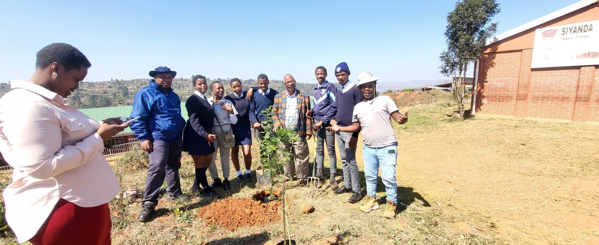
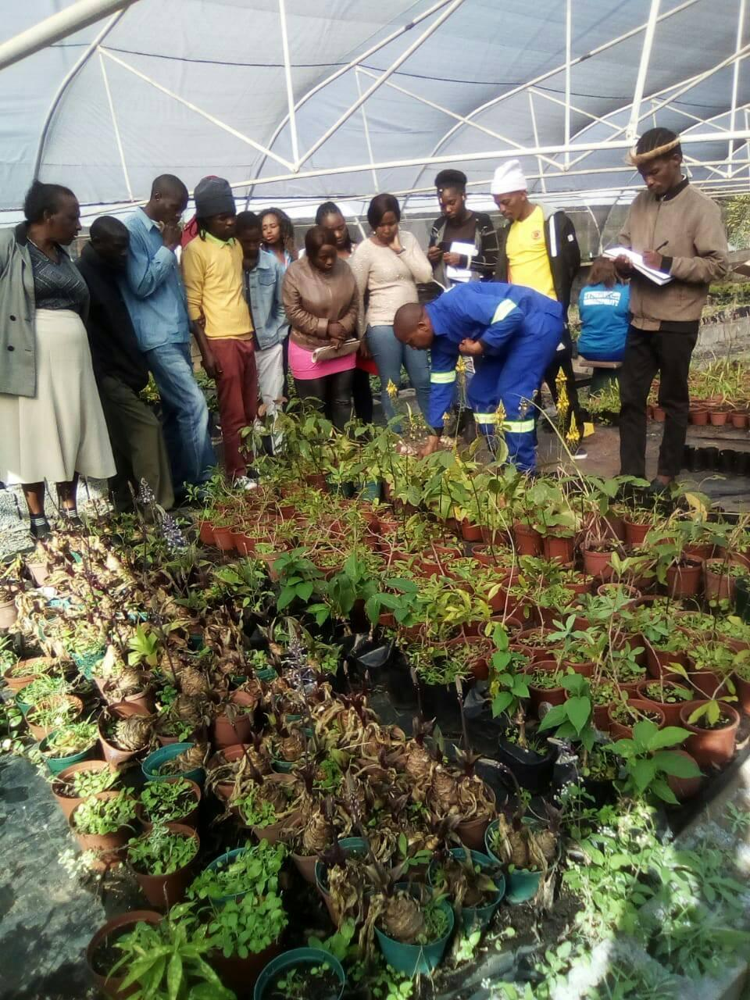
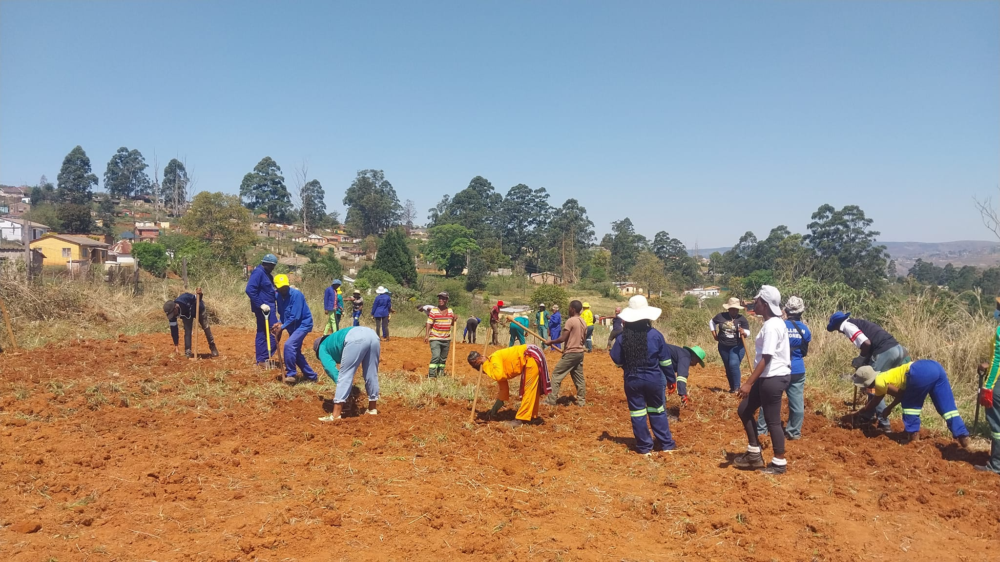
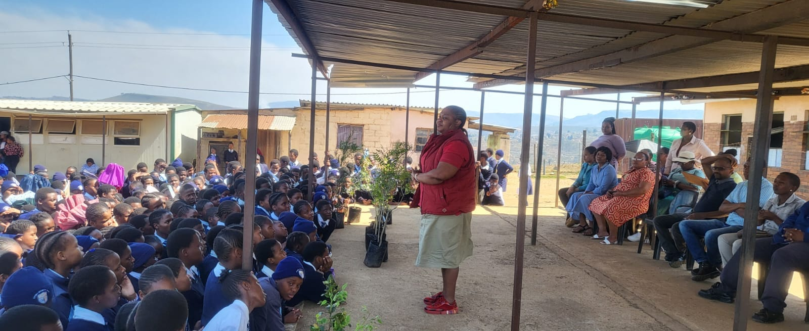
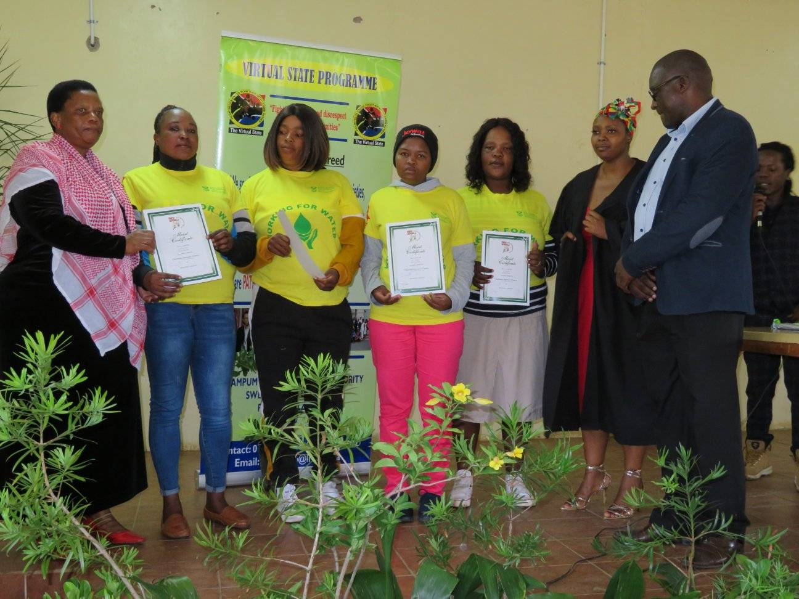

1 / 7

AGRICULTURAL
2 / 7

"A member of the NGO is teaching learners at a school about the importance of agriculture. He is sharing his knowledge and expertise with the next generation, in the hopes of inspiring them to learn more about this vital field. His passion and enthusiasm for agriculture is evident in his expression and body language, and the learners are eager to absorb his knowledge."
3/ 7

The community members gather around the plants, admiring their vibrant colors and lush foliage. They look on in wonder and amazement, as if they cannot believe that something so beautiful could have come from a simple seed. The air is filled with excitement and anticipation, as the community members can't wait to see the fruits (or vegetables!) of their labor. They look to the future with hope and optimism, knowing that the harvest will provide them with nourishment and sustenance.
4/ 7

As the members of the NGO work to plant the community garden, there is a feeling of togetherness and camaraderie in the air. They dig holes and place the seedlings with care, taking the time to ensure each plant has the best chance to grow. The sun shines down on their faces, and the soil is warm and inviting. They can feel the life and energy of the earth beneath their feet, and they know that this garden will be something special. This is a labor of love.
5/ 7

"The learners are eagerly engaged in the agricultural activity, with smiles on their faces as they learn new skills. They are carefully tending to the plants, watering them and checking their health. Their hands are dirty and their clothes are a bit muddy, but they are having a great time learning about agriculture. With each passing moment, their knowledge and understanding of this important field grows. The learners are developing a lifelong appreciation for the importance of agriculture."
6/ 7

"Thank you so much for spending time with us and learning about agriculture. We know that you have busy lives, and we appreciate you taking the time to join us in this important work. You have shown so much dedication and enthusiasm, and we are grateful for your help in creating this beautiful garden. You have truly made a difference in your community, and we are so proud of you. Your knowledge and experience will stay with you for the rest of your life, and we hope that you will always remember the joy of planting and growing your own food."
7 / 7

The participants are given their certificates of appreciation, the look of pride and joy on their faces is truly heartwarming. They beam as they read the words of gratitude and encouragement printed on the certificates, and they can't help but feel a sense of accomplishment and pride. They have learned so much and have become part of something special. The certificates are a tangible reminder of their hard work, and they will cherish them for years to come. They are no longer just participants; they are now part of a community of growers, united by a love of the earth and a desire to help others.